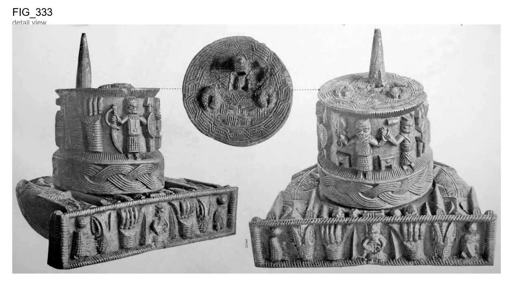

Original scan

Round execution block and stand of wood, elaborately carved with figures of men and animal
Round execution block and stand of wood, elaborately carved with figures of men and animals. On the top is a pointed spike of wood, 5 inches in height, on which the head of the victim appears to have rested, and below this on the surface at the top of the block are two receptacles for The ornamen- the thumbs of the victim, in the form of coiled mud-fish. tation on the top consists of squares and triangles filled with parallel straight lines alternating in direction, and edged with a circle of broken On the sides are three human figures, two of which are holding hands upwards, weapons and shields, and one a curved sword of Between these figures are two boxes or European form, point downwards. stools ; there are also two human hands and other objects on the other side. The bottom of the block is surrounded by a broad guilloche pattern of four The stand on which the block stands is of semicircular The top is ornamented with two animals, resembling crocodiles, On the front of this stand is a row of objects, consisting, in the centre, of a human figure holding something on the abdomen, human hands, animals' A very similar execution block, but without heads, and other objects. stand, is shown in Figs. 258 to 260, Plate XXXIV. The barbarous carving and ornamentation of such gruesome objects is quite characteristic of conforming to the outline of the curve, and other animals and objects. or five strands. form. Benin art. 88 Antique Works of Art from Benin.